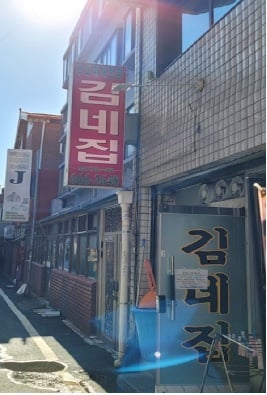
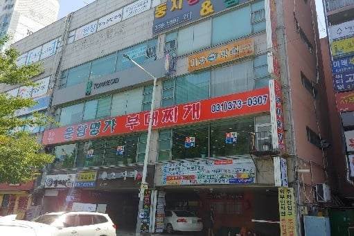
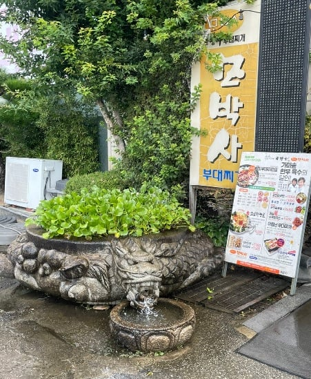

"평택 김네집"
명실상부 1등 부찌라고 생각함
김치 햄 치즈 조화가 진짜 돌았다
양도 많음 포장해서 먹으면 혜자중혜자임
3인분이면 성인남성 4명 정도 거뜬함
포장은 웨이팅 없으니까 그냥 평택가면 포장 추천

"오산 운암명가부찌"
여기는 취향차이가 많이 갈릴꺼지만
진짜 대파가 많다
그리고 대파의 맛으로 시원칼칼하니 해장용으로 좋다
여기 오면 운암회관도 추천함

"안성 모박사 부찌 본점"
여기는 햄맛 좋아하면 당연히 좋아할수밖에 없다
햄맛 과 양념장때문에 묵직한맛이있음
근처에 오면
바로 옆 명가순두부 또한 맛있음
번외로 이나경,최네집 등 이런곳은 너무 부찌 느낌이 아니고
햄찌개 이런느낌이 강해서 난 별로라고 생각함
콩나물 넣는 부찌집만 걸러도 성공임 ㅇㄱㄹㅇ